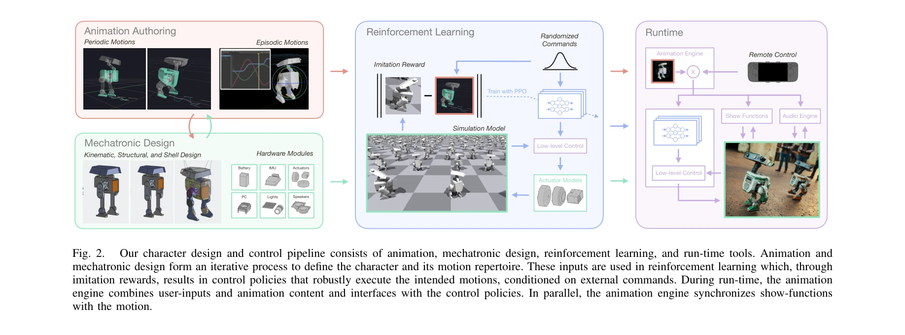
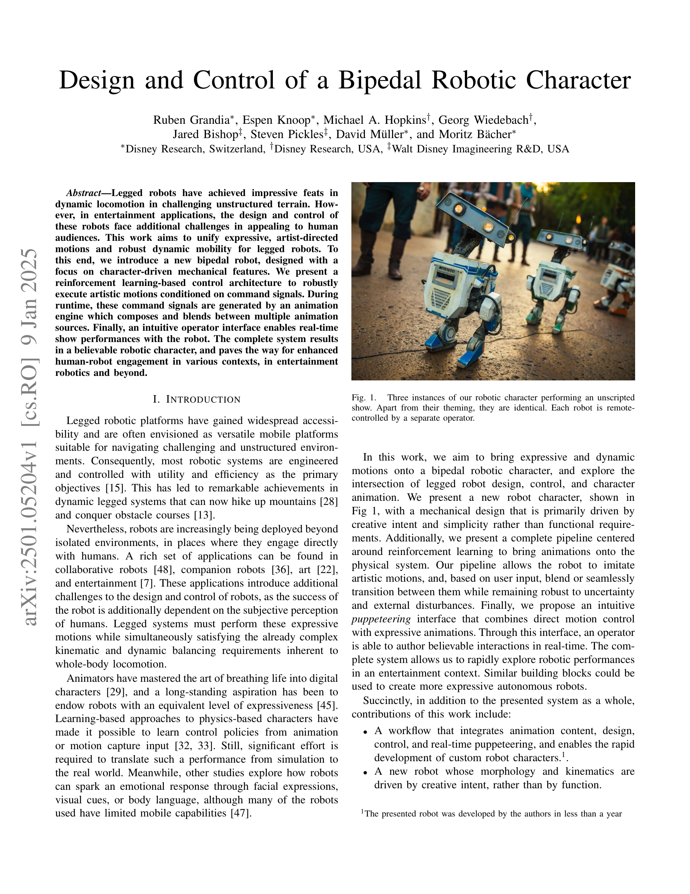

저자: Ruben Grandia, Espen Knoop, Michael A. Hopkins, Georg Wiedebach, Jared Bishop, Steven Pickles, David Müller, Moritz Bächer | 날짜: 2025-01-09 | URL: https://arxiv.org/abs/2501.05204

Fig. 2.
이 논문은 표현력 있는 예술적 동작과 강건한 동적 이동성을 결합한 이족 로봇 캐릭터의 설계 및 제어 시스템을 제시한다. Reinforcement Learning 기반 제어 구조와 실시간 애니메이션 엔진을 통해 로봇이 연극적 성능을 수행할 수 있도록 한다.

Fig. 1.
Fig. 2.
총평: 이 논문은 이족 로봇의 표현성과 동적 능력을 통합하는 혁신적인 설계 및 제어 파이프라인을 제시하며, 애니메이션과 로봇 공학의 교점에서 새로운 패러다임을 제안한다. 엔터테인ment 로보틱스와 휴먼-로봇 상호작용 분야에 중요한 기여를 하면서도 실제 시스템 구현을 통해 실용성을 입증했다.